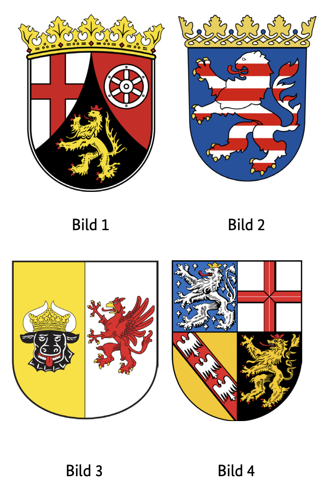
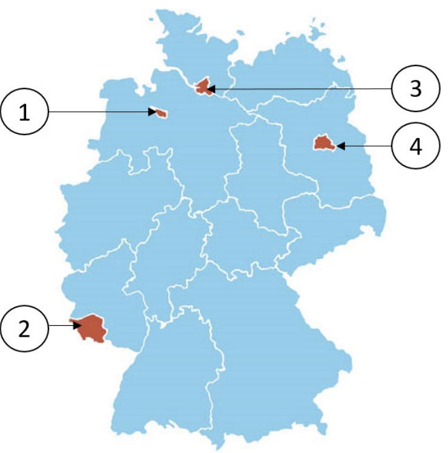

Resmi BAMF soru havuzundaki 10 Saarland (SL) eyalet sorusunun Almanca ve Türkçe açıklamalı interaktif çözümleri. Soru üzerine tıklayarak bilginizi anında test edin.
Almanya vatandaşlık ve kalıcı oturum için yapılan Leben in Deutschland (LiD) sınavında adaya toplam 33 çoktan seçmeli soru sorulur:
30 Genel Soru: Demokrasi, hukuk, tarih ve toplumsal yaşam (300 genel soru havuzundan).
3 Eyalet Sorusu: İkamet ettiğiniz eyalete özel tarih, coğrafya ve anayasa soruları (Aşağıdaki 10 eyalet sorusu havuzundan).
Sınavı geçmek için 33 sorudan en az 15 doğru (Vatandaşlık şartı) veya 17 doğru (Oryantasyon kursu başarı sertifikası) yapmanız gerekmektedir.
📝 10 Resmi Saarland Sorusunu Çözün
Soru #411 (1 / 10)Federal Eyalet: Saarland
Welches Wappen gehört zum Bundesland Saarland?
TR: Saarland devletine ait hangi arma var?

✅ Doğru Cevap: Şık D (Bild 4)
Soru, Alman federal eyaletlerinin armalarına atıfta bulunmaktadır. İzleyiciye birkaç numaralı arma gösterilir (1–4). Görev, Saarland eyaletine doğru armayı atamaktır. Bunu yapmak için Saarland'ın tipik armatik sembollerini bilmeli veya onları diğer federal eyaletlerle karşılaştırmalısınız.
Die Frage bezieht sich auf die Wappen der deutschen Bundesländer. Dem Betrachter werden mehrere nummerierte Wappen (1–4) gezeigt. Aufgabe ist es, das richtige Wappen dem Bundesland Saarland zuzuordnen. Dafür sollte man die typischen heraldischen Symbole des Saarlands kennen oder sie mit den anderen Bundesländern vergleichen.
The question refers to the coats of arms of the German federal states. The viewer is shown several numbered coats of arms (1–4). The task is to assign the correct coat of arms to the state of Saarland. To do this, you should know the typical heraldic symbols of the Saarland or compare them with the other federal states.
السؤال يتعلق بشعارات الولايات الفيدرالية الألمانية. يعرض على المشاهد عدة شعارات نبالة مرقمة (1–4). المهمة هي تعيين الشعار الصحيح لدولة سارلاند. للقيام بذلك، يجب أن تعرف الرموز النبالية النموذجية لسارلاند أو تقارنها مع الولايات الفيدرالية الأخرى.
Питання стосується гербів федеральних земель Німеччини. Глядачеві показують кілька пронумерованих гербів (1–4). Завдання полягає в тому, щоб присвоїти державі Саарланд правильний герб. Для цього слід знати типові геральдичні символи Саару або порівняти їх з іншими федеральними землями.
Soru #412 (2 / 10)Federal Eyalet: Saarland
Welches ist ein Landkreis im Saarland?
TR: Saarland'da hangi bir ilçe?
✅ Doğru Cevap: Şık C (Neunkirchen)
Soru, Almanya'nın idari yapısıyla ilgilidir. Almanya, federal eyaletlere ayrılmıştır; bu eyaletlerin ise bölgeleri ve bağımsız şehirleri vardır. Saarland eyaletine ait bir ilçe arıyoruz. Cevap seçeneklerinde Almanya'nın farklı bölgelerinden ilçe isimleri yer alır, bu nedenle hangi ilçelerin hangi eyalete ait olduğunu bilmek önemlidir.
Die Frage bezieht sich auf die Verwaltungsstruktur Deutschlands. Deutschland ist in Bundesländer unterteilt, die wiederum Landkreise und kreisfreie Städte haben. Gesucht ist ein Landkreis, der zum Bundesland Saarland gehört. Die Antwortmöglichkeiten enthalten Namen von Kreisen aus verschiedenen Regionen Deutschlands, daher ist es wichtig zu wissen, welche Kreise zu welchem Bundesland zählen.
The question relates to the administrative structure of Germany. Germany is divided into federal states, which in turn have districts and independent cities. We are looking for a district that belongs to the state of Saarland. The answer options contain names of districts from different regions of Germany, so it is important to know which districts belong to which state.
السؤال يتعلق بالهيكل الإداري لألمانيا. تنقسم ألمانيا إلى ولايات اتحادية، والتي بدورها لديها مناطق ومدن مستقلة. نحن نبحث عن منطقة تنتمي إلى ولاية سارلاند. خيارات الإجابة تحتوي على أسماء مناطق من مناطق مختلفة في ألمانيا، لذا من المهم معرفة أي المناطق تنتمي إلى أي ولاية.
Питання стосується адміністративної структури Німеччини. Німеччина поділена на федеральні землі, які, у свою чергу, мають райони та незалежні міста. Ми шукаємо район, який належить до держави Саарланд. Варіанти відповідей містять назви районів з різних регіонів Німеччини, тому важливо знати, які райони належать до якої землі.
Soru #413 (3 / 10)Federal Eyalet: Saarland
Für wie viele Jahre wird der Landtag des Saarlandes gewählt?
TR: Saarland eyalet parlamentosu kaç yıl boyunca seçilecek?
✅ Doğru Cevap: Şık C (5)
Saarland eyalet parlamentosu, Saarland federal eyaletinin parlamentosudur. Genel seçimlerde vatandaşlar tarafından seçilir ve yasama ile eyalet hükümetinin kontrolü gibi önemli görevleri üstlenir. Soru, bir seçim süresine atıfta bulunur; yani milletvekillerinin yeni seçimler yapılmadan önce kaç yıl görevde kaldığına atıfta bulunur.
Der Landtag des Saarlandes ist das Parlament des Bundeslandes Saarland. Er wird von den Bürgerinnen und Bürgern in allgemeinen Wahlen gewählt und übernimmt wichtige Aufgaben wie Gesetzgebung und Kontrolle der Landesregierung. Die Frage bezieht sich auf die Dauer einer Wahlperiode, also wie viele Jahre die Abgeordneten im Amt bleiben, bevor neu gewählt wird.
The state parliament of the Saarland is the parliament of the federal state of Saarland. He is elected by the citizens in general elections and takes on important tasks such as legislation and control of the state government. The question refers to the duration of an electoral period, i.e. how many years the members of parliament remain in office before new elections are held.
برلمان ولاية سارلاند هو برلمان ولاية سارلاند الفيدرالية. ينتخب من قبل المواطنين في الانتخابات العامة ويتولى مهام مهمة مثل التشريع والسيطرة على حكومة الولاية. يشير السؤال إلى مدة فترة الانتخابات، أي كم سنة يبقى أعضاء البرلمان في مناصبهم قبل إجراء انتخابات جديدة.
Земельний парламент Саарланду — це парламент федеральної держави Саарланд. Його обирають громадяни на загальних виборах, і він виконує важливі завдання, такі як законодавство та контроль уряду штату. Питання стосується тривалості виборчого періоду, тобто скільки років члени парламенту залишаються на посаді до проведення нових виборів.
Soru #414 (4 / 10)Federal Eyalet: Saarland
Ab welchem Alter darf man im Saarland bei Kommunalwahlen wählen?
TR: Saarland'da yerel seçimlerde hangi yaştan itibaren oy kullanabilirsiniz?
?
✅ Doğru Cevap: Şık C (18)
Almanya'daki hayat için önemli bir soru
Wichtige Frage für das Leben in Deutschland
Important question for life in Germany
سؤال مهم للحياة في ألمانيا
Важливе питання для життя в Німеччині
Soru #415 (5 / 10)Federal Eyalet: Saarland
Welche Farben hat die Landesflagge des Saarlandes?
TR: Saarland devlet bayrağı hangi renklere sahip?
✅ Doğru Cevap: Şık B (schwarz-rot-gold)
Saarland, Almanya'nın 16 federal eyaletinden biridir ve her federal eyalet gibi, bir arma ve bir devlet bayrağı gibi kendi amblemlerine sahiptir. Bayrak resmi etkinliklerde, kamu binalarında ve devlet etkinliklerinde dalgalandırılır. Soru, bu ülke bayrağının doğru renklerini tanımaya yöneliktir.
Das Saarland ist eines der 16 Bundesländer Deutschlands und besitzt wie jedes Bundesland eigene Hoheitszeichen, darunter ein Wappen und eine Landesflagge. Die Flagge wird bei offiziellen Anlässen, an öffentlichen Gebäuden und bei staatlichen Veranstaltungen gehisst. Die Frage zielt darauf ab, die korrekten Farben dieser Landesflagge zu erkennen.
Saarland is one of the 16 federal states of Germany and, like each federal state, has its own emblems, including a coat of arms and a state flag. The flag is hoisted on official occasions, on public buildings and at state events. The question is aimed at recognizing the correct colors of this country flag.
سارلاند هي واحدة من 16 ولاية اتحادية في ألمانيا، وككل ولاية اتحادية، لديها شعاراتها الخاصة، بما في ذلك شعار النبالة وعلم الولاية. يرفع العلم في المناسبات الرسمية، وعلى المباني العامة وفي الفعاليات الرسمية. السؤال يهدف إلى التعرف على الألوان الصحيحة لهذا العلم الريفي.
Саарланд — одна з 16 федеративних земель Німеччини і, як і кожна федеральна земля, має власні емблеми, включно з гербом і прапором землі. Прапор піднімається на офіційних заходах, на громадських будівлях та на державних заходах. Питання спрямоване на визначення правильних кольорів прапора цієї країни.
Soru #416 (6 / 10)Federal Eyalet: Saarland
Wo können Sie sich im Saarland über politische Themen informieren?
TR: Saarland'daki siyasi konuları nereden öğrenebilirsiniz?
?
✅ Doğru Cevap: Şık B (bei der Landeszentrale für politische Bildung)
Almanya'daki hayat için önemli bir soru
Wichtige Frage für das Leben in Deutschland
Important question for life in Germany
سؤال مهم للحياة في ألمانيا
Важливе питання для життя в Німеччині
Soru #417 (7 / 10)Federal Eyalet: Saarland
Die Landeshauptstadt des Saarlandes heißt …
TR: Saarland'ın eyalet başkenti ...
✅ Doğru Cevap: Şık C (Saarbrücken)
Soru, Almanya hakkında temel coğrafi bilgiye atıfta bulunur. Saarland, Almanya Federal Cumhuriyeti'nin 16 federal eyaletinden biridir ve eyaletin güneybatısında yer almaktadır. Saarland eyalet başkenti aranmaktadır. Saarland'dan seçilebilecek birkaç tanınmış şehir vardır ve bunlardan yalnızca biri bu işlevi yerine getirmektedir.
Die Frage bezieht sich auf grundlegende geografische Kenntnisse über Deutschland. Das Saarland ist eines der 16 Bundesländer der Bundesrepublik und liegt im Südwesten des Landes. Gesucht wird die Landeshauptstadt des Saarlandes. Zur Auswahl stehen mehrere bekannte Städte aus dem Saarland, von denen nur eine diese Funktion erfüllt.
The question refers to basic geographical knowledge about Germany. Saarland is one of the 16 federal states of the Federal Republic of Germany and is located in the southwest of the state. The state capital of Saarland is being sought. There are several well-known cities from Saarland to choose from, of which only one fulfils this function.
السؤال يشير إلى المعرفة الجغرافية الأساسية عن ألمانيا. سارلاند هي واحدة من 16 ولاية اتحادية في جمهورية ألمانيا الاتحادية وتقع في جنوب غرب الولاية. يتم البحث عن عاصمة ولاية سارلاند. هناك عدة مدن معروفة من سارلاند للاختيار من بينها، ولا تؤدي منها سوى واحدة هذه المهمة.
Питання стосується базових географічних знань про Німеччину. Саарланд — одна з 16 федеральних земель Федеративної Республіки Німеччина і розташований на південному заході землі. Шукають столицю штату Саарланд. Є кілька відомих міст Саарланду на вибір, з яких лише одне виконує цю функцію.
Soru #418 (8 / 10)Federal Eyalet: Saarland
Welches Bundesland ist das Saarland?
TR: Saarland hangi federal eyalet?

✅ Doğru Cevap: Şık B (2)
Almanya'nın federal eyaletleriyle ilgili bir sınavda, belirli bir eyaletin hangi kategori veya numaraya ait olduğunu bilip bilmediğiniz kontrol edilir. Almanya, genellikle listeler, haritalar veya istatistiklerle numaralandırılan 16 federal eyaletten oluşur. Aşağıdaki soru özellikle Saarland'a atıfta bulunur ve birkaç numaralı cevap seçeneğinden doğru atamayı seçmeniz gerekir.
In einem Quiz über die Bundesländer Deutschlands soll geprüft werden, ob man weiß, zu welcher Kategorie oder Nummer ein bestimmtes Bundesland gehört. Deutschland besteht aus 16 Bundesländern, die oft in Listen, Karten oder Statistiken nummeriert werden. Die folgende Frage bezieht sich speziell auf das Saarland und verlangt, die richtige Zuordnung aus mehreren nummerierten Antwortmöglichkeiten auszuwählen.
In a quiz about the federal states of Germany, it is to be checked whether one knows to which category or number a certain state belongs. Germany consists of 16 federal states, which are often numbered in lists, maps or statistics. The following question refers specifically to Saarland and requires you to select the correct assignment from several numbered answer options.
في اختبار عن الولايات الفيدرالية في ألمانيا، يجب التحقق مما إذا كان الشخص يعرف إلى أي فئة أو رقم تنتمي إليه ولاية معينة. تتكون ألمانيا من 16 ولاية فيدرالية، وغالبا ما يتم ترقيمها في قوائم أو خرائط أو إحصائيات. السؤال التالي يشير تحديدا إلى سارلاند ويتطلب منك اختيار المهمة الصحيحة من بين عدة خيارات إجابات مرقمة.
Під час тесту про федеральні землі Німеччини потрібно перевірити, чи знаєш, до якої категорії або номеру належить певна земля. Німеччина складається з 16 федеральних земель, які часто нумеруються у списках, картах або статистиці. Наступне питання стосується конкретно Саарланду і вимагає обрати правильне завдання з кількох пронумерованих варіантів відповіді.
Soru #419 (9 / 10)Federal Eyalet: Saarland
Wie nennt man die Regierungschefin / den Regierungschef des Saarlandes?
TR: Hükümet başkanına ne diyorsunuz?
Saarland mı?
✅ Doğru Cevap: Şık D (Ministerpräsidentin / Ministerpräsident)
Almanya'daki hayat için önemli bir soru
Wichtige Frage für das Leben in Deutschland
Important question for life in Germany
سؤال مهم للحياة في ألمانيا
Важливе питання для життя в Німеччині
Soru #420 (10 / 10)Federal Eyalet: Saarland
Welche Ministerin / welchen Minister hat das Saarland nicht?
TR: Saarland'da hangi bakan yok?
✅ Doğru Cevap: Şık B (Außenministerin / Außenminister)
Saarland, Almanya'nın 16 federal eyaletinden biridir ve çeşitli departmanları olan kendi eyalet hükümetine sahiptir. Bu bakanlıklar, iç işler, maliye veya adalet gibi belirli politika alanlarından sorumlu bakanlar tarafından yönetilmektedir. Tüm bakanlıklar eyalet düzeyinde mevcut değildir, çünkü bazı sorumluluklar federal hükümete aittir. Soru, Saarland eyalet hükümetinde hangi bakanlık makamlarının bulunmadığını tanımak için kullanılıyor.
Das Saarland ist eines der 16 Bundesländer Deutschlands und hat eine eigene Landesregierung mit verschiedenen Ressorts. Diese Ressorts werden von Ministerinnen und Ministern geleitet, die für bestimmte Politikbereiche wie Inneres, Finanzen oder Justiz zuständig sind. Nicht alle Ministerien existieren auf Landesebene, da einige Zuständigkeiten beim Bund liegen. Die Frage fordert dazu auf, zu erkennen, welches der genannten Ministerämter es in der Landesregierung des Saarlandes nicht gibt.
Saarland is one of Germany's 16 federal states and has its own state government with various departments. These ministries are headed by ministers who are responsible for specific policy areas such as home affairs, finance or justice. Not all ministries exist at the state level, as some responsibilities lie with the federal government. The question calls for recognizing which of the mentioned ministerial offices does not exist in the state government of the Saarland.
سارلاند هي واحدة من 16 ولاية اتحادية في ألمانيا ولديها حكومتها الخاصة مع عدة وزارات. يرأسها وزراء مسؤولون عن مجالات سياسية محددة مثل الشؤون الداخلية أو المالية أو العدل. ليست كل الوزارات موجودة على مستوى الولايات، حيث تقع بعض المسؤوليات على عاتق الحكومة الفيدرالية. يدعو السؤال إلى الاعتراف بأي من المناصب الوزارية المذكورة لا توجد في حكومة ولاية سارلاند.
Саарланд — одна з 16 федеральних земель Німеччини і має власний уряд землі з різними департаментами. Ці міністерства очолюють міністри, відповідальні за конкретні політичні сфери, такі як внутрішні справи, фінанси чи юстиція. Не всі міністерства існують на рівні штатів, оскільки частина обов'язків лежить на федеральному уряді. Питання вимагає визнати, які з згаданих міністерських посад не існують у державному уряді Саарланду.
300 Genel Soruyu ve Eyalet Sorularını Eksiksiz Çalışın
DeutschLernen LiD Trainer'da tüm 310 soruyu 5 farklı dilde (Türkçe, İngilizce, Arapça, Ukraynaca, Almanca) çözebilir, deneme sınavı simülasyonu yapabilirsiniz.